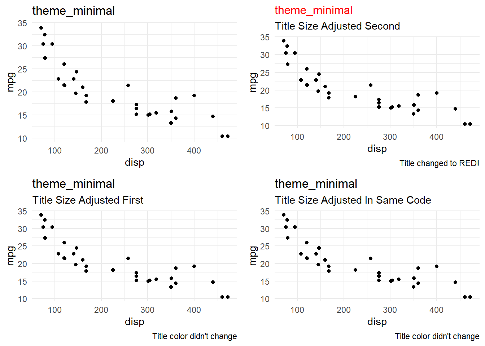

Themes are going to be helpful to adjust the default. There are built-in themes already available - but you can also adjust specific elements.
To globally set a theme, use theme_set( ) in an R Chunk. All subsequent graphs will use that theme as default.
Example: theme_set(theme_bw())
theme_set(theme_bw())
gf_point(mpg~disp, data = mtcars)To manually set a theme, use the gf_theme( ) layer on any plot.
Example: gf_plot( ) %>% gf_theme(theme_bw())
gf_point(mpg~disp, data = mtcars) %>%
gf_theme(theme_minimal())Here is a list of many themes available and a preview of what they look like.
require(gridExtra)
gray = gf_point(mpg~disp, data = mtcars) %>%
gf_theme(theme_gray()) %>%
gf_labs(title = "theme_gray")
bw = gf_point(mpg~disp, data = mtcars) %>%
gf_theme(theme_bw()) %>%
gf_labs(title = "theme_bw")
linedraw = gf_point(mpg~disp, data = mtcars) %>%
gf_theme(theme_linedraw()) %>%
gf_labs(title = "theme_linedraw")
light = gf_point(mpg~disp, data = mtcars) %>%
gf_theme(theme_light()) %>%
gf_labs(title = "theme_light")
dark = gf_point(mpg~disp, data = mtcars) %>%
gf_theme(theme_dark()) %>%
gf_labs(title = "theme_dark")
minimal = gf_point(mpg~disp, data = mtcars) %>%
gf_theme(theme_minimal()) %>%
gf_labs(title = "theme_minimal")
classic = gf_point(mpg~disp, data = mtcars) %>%
gf_theme(theme_classic()) %>%
gf_labs(title = "theme_classic")
void = gf_point(mpg~disp, data = mtcars) %>%
gf_theme(theme_void()) %>%
gf_labs(title = "theme_void")
test = gf_point(mpg~disp, data = mtcars) %>%
gf_theme(theme_test()) %>%
gf_labs(title = "theme_test")
grid.arrange(gray, bw, linedraw, light, dark, minimal, classic, void, test, nrow = 3 )For even MORE themes, check out ggthemes.
If you want to adjust a thematic aspect of a graph, the order of your layers is going to matter. For example, you’ll want to either globally set your overall theme or adjust with a theme layer. Then, you can add a separate layer to adjust a theme element. It will not work to add this to the same theme layer you use to set the theme!
The following example illustrates if we want the minimal theme and then have an adjusted title, the only combination that seems to get the desired result (until an update comes out) is to have the theme statement first, then the title size statement second.
Example: gf_theme(global_theme()) %>% gf_theme(Theme Element Adjustment)
minimal = gf_point(mpg~disp, data = mtcars) %>%
gf_theme(theme_minimal()) %>%
gf_labs(title = "theme_minimal")
titleadjust2 = gf_point(mpg~disp, data = mtcars) %>%
gf_theme(theme_minimal()) %>%
gf_labs(title = "theme_minimal", subtitle = "Title Size Adjusted Second") %>%
gf_theme(plot.title = element_text(size=12))
titleadjust1 = gf_point(mpg~disp, data = mtcars) %>%
gf_theme(plot.title = element_text(size=12)) %>%
gf_theme(theme_minimal()) %>%
gf_labs(title = "theme_minimal", subtitle = "Title Size Adjusted First")
same.line = gf_point(mpg~disp, data = mtcars) %>%
gf_theme(plot.title = element_text(size=12), theme_minimal()) %>%
gf_labs(title = "theme_minimal", subtitle = "Title Size Adjusted In Same Code")
grid.arrange(minimal, titleadjust2, titleadjust1, same.line, nrow = 2)
There are many elements of a theme that can be adjusted. For example:
All elements that can be adjusted in a theme statement can be found in the ggplot reference guide. Also, at the bottom of the page there is a plethora of examples of themes adjusted.
Because so many examples have already been well categorized above, here are a few that stand out as particularly helpful.
If you’d like to make Edward Tufte proud by eliminating extra “ink” (e.g. axis tick marks, values, lines) - here is an example.
before = gf_dotplot(~GuessedLength, data = subset(lengths, Unit == "Feet"), binwidth = 1, alpha = 0.3) %>%
gf_labs(x = "Guessed Feet", title = "Default theme_bw", y = NULL) %>%
gf_theme(theme_bw())
after = gf_dotplot(~GuessedLength, data = subset(lengths, Unit == "Feet"), binwidth = 1, alpha = 0.3) %>%
gf_labs(x = "Guessed Feet", title = "Removing extra ink from theme_bw", y = NULL) %>%
gf_theme(theme_bw()) %>%
gf_theme(axis.text.y = element_blank(),
axis.ticks.y = element_blank(),
panel.border = element_blank(), # Removes entire black box
axis.line.x = element_line()) # Adds back in a line for x axis
grid.arrange(before, after, nrow = 2)All things legend-related are discussed in the Legend section, but because it utilizes a theme statement, it is reiterated here.
Remove specific legend: gf_theme(guides(color = FALSE))
Remove ALL legends: gf_theme(legend.position = “none”)
gf_point(mpg~disp, data = mtcars, shape = ~as.factor(cyl), color = ~as.factor(cyl), size = ~wt) %>%
gf_theme(theme_minimal()) %>%
gf_labs(shape = "cylinders", color = "cylinders", title = "All Legends Included")gf_point(mpg~disp, data = mtcars, shape = ~as.factor(cyl), color = ~as.factor(cyl), size = ~wt) %>%
gf_theme(theme_minimal()) %>%
gf_labs(shape = "cylinders", color = "cylinders", title = "Color Legend Removed (Only)") %>%
gf_theme(guides(color = FALSE))## Warning: The `<scale>` argument of `guides()` cannot be `FALSE`. Use "none" instead as
## of ggplot2 3.3.4.
## This warning is displayed once every 8 hours.
## Call `lifecycle::last_lifecycle_warnings()` to see where this warning was
## generated.gf_point(mpg~disp, data = mtcars, shape = ~as.factor(cyl), color = ~as.factor(cyl), size = ~wt) %>%
gf_theme(theme_minimal()) %>%
gf_labs(shape = "cylinders", color = "cylinders", title = "Remove ALL Legends") %>%
gf_theme(legend.position = "none")gf_point(mpg~disp, data = mtcars, shape = ~as.factor(cyl), color = ~as.factor(cyl), size = ~wt) %>%
gf_theme(theme_minimal()) %>%
gf_labs(shape = "cylinders", color = "cylinders", title = "Default (Minimal) Facet Strip") %>%
gf_facet_wrap(~cyl)gf_point(mpg~disp, data = mtcars, shape = ~as.factor(cyl), color = ~as.factor(cyl), size = ~wt) %>%
gf_theme(theme_minimal()) %>%
gf_labs(shape = "cylinders", color = "cylinders", title = "Adjusted Facet Strip & Spacing") %>%
gf_facet_wrap(~cyl) %>%
gf_theme(legend.position = "none",
panel.spacing = unit(0.3, "in"),
strip.text = element_text(colour = "white"),
strip.background = element_rect(fill = "grey20",
color = "grey80",
linewidth = 1))The following code displays all theme elements you can adjust.
Examples of Theme Elements:
theme_get()## List of 136
## $ line :List of 6
## ..$ colour : chr "black"
## ..$ linewidth : num 0.5
## ..$ linetype : num 1
## ..$ lineend : chr "butt"
## ..$ arrow : logi FALSE
## ..$ inherit.blank: logi TRUE
## ..- attr(*, "class")= chr [1:2] "element_line" "element"
## $ rect :List of 5
## ..$ fill : chr "white"
## ..$ colour : chr "black"
## ..$ linewidth : num 0.5
## ..$ linetype : num 1
## ..$ inherit.blank: logi TRUE
## ..- attr(*, "class")= chr [1:2] "element_rect" "element"
## $ text :List of 11
## ..$ family : chr ""
## ..$ face : chr "plain"
## ..$ colour : chr "black"
## ..$ size : num 11
## ..$ hjust : num 0.5
## ..$ vjust : num 0.5
## ..$ angle : num 0
## ..$ lineheight : num 0.9
## ..$ margin : 'margin' num [1:4] 0points 0points 0points 0points
## .. ..- attr(*, "unit")= int 8
## ..$ debug : logi FALSE
## ..$ inherit.blank: logi TRUE
## ..- attr(*, "class")= chr [1:2] "element_text" "element"
## $ title : NULL
## $ aspect.ratio : NULL
## $ axis.title : NULL
## $ axis.title.x :List of 11
## ..$ family : NULL
## ..$ face : NULL
## ..$ colour : NULL
## ..$ size : NULL
## ..$ hjust : NULL
## ..$ vjust : num 1
## ..$ angle : NULL
## ..$ lineheight : NULL
## ..$ margin : 'margin' num [1:4] 2.75points 0points 0points 0points
## .. ..- attr(*, "unit")= int 8
## ..$ debug : NULL
## ..$ inherit.blank: logi TRUE
## ..- attr(*, "class")= chr [1:2] "element_text" "element"
## $ axis.title.x.top :List of 11
## ..$ family : NULL
## ..$ face : NULL
## ..$ colour : NULL
## ..$ size : NULL
## ..$ hjust : NULL
## ..$ vjust : num 0
## ..$ angle : NULL
## ..$ lineheight : NULL
## ..$ margin : 'margin' num [1:4] 0points 0points 2.75points 0points
## .. ..- attr(*, "unit")= int 8
## ..$ debug : NULL
## ..$ inherit.blank: logi TRUE
## ..- attr(*, "class")= chr [1:2] "element_text" "element"
## $ axis.title.x.bottom : NULL
## $ axis.title.y :List of 11
## ..$ family : NULL
## ..$ face : NULL
## ..$ colour : NULL
## ..$ size : NULL
## ..$ hjust : NULL
## ..$ vjust : num 1
## ..$ angle : num 90
## ..$ lineheight : NULL
## ..$ margin : 'margin' num [1:4] 0points 2.75points 0points 0points
## .. ..- attr(*, "unit")= int 8
## ..$ debug : NULL
## ..$ inherit.blank: logi TRUE
## ..- attr(*, "class")= chr [1:2] "element_text" "element"
## $ axis.title.y.left : NULL
## $ axis.title.y.right :List of 11
## ..$ family : NULL
## ..$ face : NULL
## ..$ colour : NULL
## ..$ size : NULL
## ..$ hjust : NULL
## ..$ vjust : num 1
## ..$ angle : num -90
## ..$ lineheight : NULL
## ..$ margin : 'margin' num [1:4] 0points 0points 0points 2.75points
## .. ..- attr(*, "unit")= int 8
## ..$ debug : NULL
## ..$ inherit.blank: logi TRUE
## ..- attr(*, "class")= chr [1:2] "element_text" "element"
## $ axis.text :List of 11
## ..$ family : NULL
## ..$ face : NULL
## ..$ colour : chr "grey30"
## ..$ size : 'rel' num 0.8
## ..$ hjust : NULL
## ..$ vjust : NULL
## ..$ angle : NULL
## ..$ lineheight : NULL
## ..$ margin : NULL
## ..$ debug : NULL
## ..$ inherit.blank: logi TRUE
## ..- attr(*, "class")= chr [1:2] "element_text" "element"
## $ axis.text.x :List of 11
## ..$ family : NULL
## ..$ face : NULL
## ..$ colour : NULL
## ..$ size : NULL
## ..$ hjust : NULL
## ..$ vjust : num 1
## ..$ angle : NULL
## ..$ lineheight : NULL
## ..$ margin : 'margin' num [1:4] 2.2points 0points 0points 0points
## .. ..- attr(*, "unit")= int 8
## ..$ debug : NULL
## ..$ inherit.blank: logi TRUE
## ..- attr(*, "class")= chr [1:2] "element_text" "element"
## $ axis.text.x.top :List of 11
## ..$ family : NULL
## ..$ face : NULL
## ..$ colour : NULL
## ..$ size : NULL
## ..$ hjust : NULL
## ..$ vjust : num 0
## ..$ angle : NULL
## ..$ lineheight : NULL
## ..$ margin : 'margin' num [1:4] 0points 0points 2.2points 0points
## .. ..- attr(*, "unit")= int 8
## ..$ debug : NULL
## ..$ inherit.blank: logi TRUE
## ..- attr(*, "class")= chr [1:2] "element_text" "element"
## $ axis.text.x.bottom : NULL
## $ axis.text.y :List of 11
## ..$ family : NULL
## ..$ face : NULL
## ..$ colour : NULL
## ..$ size : NULL
## ..$ hjust : num 1
## ..$ vjust : NULL
## ..$ angle : NULL
## ..$ lineheight : NULL
## ..$ margin : 'margin' num [1:4] 0points 2.2points 0points 0points
## .. ..- attr(*, "unit")= int 8
## ..$ debug : NULL
## ..$ inherit.blank: logi TRUE
## ..- attr(*, "class")= chr [1:2] "element_text" "element"
## $ axis.text.y.left : NULL
## $ axis.text.y.right :List of 11
## ..$ family : NULL
## ..$ face : NULL
## ..$ colour : NULL
## ..$ size : NULL
## ..$ hjust : num 0
## ..$ vjust : NULL
## ..$ angle : NULL
## ..$ lineheight : NULL
## ..$ margin : 'margin' num [1:4] 0points 0points 0points 2.2points
## .. ..- attr(*, "unit")= int 8
## ..$ debug : NULL
## ..$ inherit.blank: logi TRUE
## ..- attr(*, "class")= chr [1:2] "element_text" "element"
## $ axis.text.theta : NULL
## $ axis.text.r :List of 11
## ..$ family : NULL
## ..$ face : NULL
## ..$ colour : NULL
## ..$ size : NULL
## ..$ hjust : num 0.5
## ..$ vjust : NULL
## ..$ angle : NULL
## ..$ lineheight : NULL
## ..$ margin : 'margin' num [1:4] 0points 2.2points 0points 2.2points
## .. ..- attr(*, "unit")= int 8
## ..$ debug : NULL
## ..$ inherit.blank: logi TRUE
## ..- attr(*, "class")= chr [1:2] "element_text" "element"
## $ axis.ticks :List of 6
## ..$ colour : chr "grey20"
## ..$ linewidth : NULL
## ..$ linetype : NULL
## ..$ lineend : NULL
## ..$ arrow : logi FALSE
## ..$ inherit.blank: logi TRUE
## ..- attr(*, "class")= chr [1:2] "element_line" "element"
## $ axis.ticks.x : NULL
## $ axis.ticks.x.top : NULL
## $ axis.ticks.x.bottom : NULL
## $ axis.ticks.y : NULL
## $ axis.ticks.y.left : NULL
## $ axis.ticks.y.right : NULL
## $ axis.ticks.theta : NULL
## $ axis.ticks.r : NULL
## $ axis.minor.ticks.x.top : NULL
## $ axis.minor.ticks.x.bottom : NULL
## $ axis.minor.ticks.y.left : NULL
## $ axis.minor.ticks.y.right : NULL
## $ axis.minor.ticks.theta : NULL
## $ axis.minor.ticks.r : NULL
## $ axis.ticks.length : 'simpleUnit' num 2.75points
## ..- attr(*, "unit")= int 8
## $ axis.ticks.length.x : NULL
## $ axis.ticks.length.x.top : NULL
## $ axis.ticks.length.x.bottom : NULL
## $ axis.ticks.length.y : NULL
## $ axis.ticks.length.y.left : NULL
## $ axis.ticks.length.y.right : NULL
## $ axis.ticks.length.theta : NULL
## $ axis.ticks.length.r : NULL
## $ axis.minor.ticks.length : 'rel' num 0.75
## $ axis.minor.ticks.length.x : NULL
## $ axis.minor.ticks.length.x.top : NULL
## $ axis.minor.ticks.length.x.bottom: NULL
## $ axis.minor.ticks.length.y : NULL
## $ axis.minor.ticks.length.y.left : NULL
## $ axis.minor.ticks.length.y.right : NULL
## $ axis.minor.ticks.length.theta : NULL
## $ axis.minor.ticks.length.r : NULL
## $ axis.line : list()
## ..- attr(*, "class")= chr [1:2] "element_blank" "element"
## $ axis.line.x : NULL
## $ axis.line.x.top : NULL
## $ axis.line.x.bottom : NULL
## $ axis.line.y : NULL
## $ axis.line.y.left : NULL
## $ axis.line.y.right : NULL
## $ axis.line.theta : NULL
## $ axis.line.r : NULL
## $ legend.background :List of 5
## ..$ fill : NULL
## ..$ colour : logi NA
## ..$ linewidth : NULL
## ..$ linetype : NULL
## ..$ inherit.blank: logi TRUE
## ..- attr(*, "class")= chr [1:2] "element_rect" "element"
## $ legend.margin : 'margin' num [1:4] 5.5points 5.5points 5.5points 5.5points
## ..- attr(*, "unit")= int 8
## $ legend.spacing : 'simpleUnit' num 11points
## ..- attr(*, "unit")= int 8
## $ legend.spacing.x : NULL
## $ legend.spacing.y : NULL
## $ legend.key : NULL
## $ legend.key.size : 'simpleUnit' num 1.2lines
## ..- attr(*, "unit")= int 3
## $ legend.key.height : NULL
## $ legend.key.width : NULL
## $ legend.key.spacing : 'simpleUnit' num 5.5points
## ..- attr(*, "unit")= int 8
## $ legend.key.spacing.x : NULL
## $ legend.key.spacing.y : NULL
## $ legend.frame : NULL
## $ legend.ticks : NULL
## $ legend.ticks.length : 'rel' num 0.2
## $ legend.axis.line : NULL
## $ legend.text :List of 11
## ..$ family : NULL
## ..$ face : NULL
## ..$ colour : NULL
## ..$ size : 'rel' num 0.8
## ..$ hjust : NULL
## ..$ vjust : NULL
## ..$ angle : NULL
## ..$ lineheight : NULL
## ..$ margin : NULL
## ..$ debug : NULL
## ..$ inherit.blank: logi TRUE
## ..- attr(*, "class")= chr [1:2] "element_text" "element"
## $ legend.text.position : NULL
## $ legend.title :List of 11
## ..$ family : NULL
## ..$ face : NULL
## ..$ colour : NULL
## ..$ size : NULL
## ..$ hjust : num 0
## ..$ vjust : NULL
## ..$ angle : NULL
## ..$ lineheight : NULL
## ..$ margin : NULL
## ..$ debug : NULL
## ..$ inherit.blank: logi TRUE
## ..- attr(*, "class")= chr [1:2] "element_text" "element"
## $ legend.title.position : NULL
## $ legend.position : chr "right"
## $ legend.position.inside : NULL
## $ legend.direction : NULL
## $ legend.byrow : NULL
## $ legend.justification : chr "center"
## $ legend.justification.top : NULL
## $ legend.justification.bottom : NULL
## $ legend.justification.left : NULL
## $ legend.justification.right : NULL
## $ legend.justification.inside : NULL
## $ legend.location : NULL
## $ legend.box : NULL
## $ legend.box.just : NULL
## $ legend.box.margin : 'margin' num [1:4] 0cm 0cm 0cm 0cm
## ..- attr(*, "unit")= int 1
## $ legend.box.background : list()
## ..- attr(*, "class")= chr [1:2] "element_blank" "element"
## $ legend.box.spacing : 'simpleUnit' num 11points
## ..- attr(*, "unit")= int 8
## [list output truncated]
## - attr(*, "class")= chr [1:2] "theme" "gg"
## - attr(*, "complete")= logi TRUE
## - attr(*, "validate")= logi TRUE